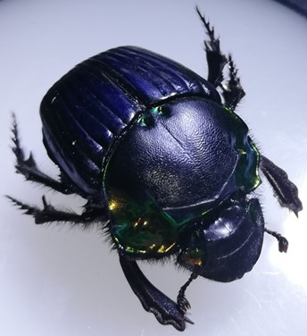
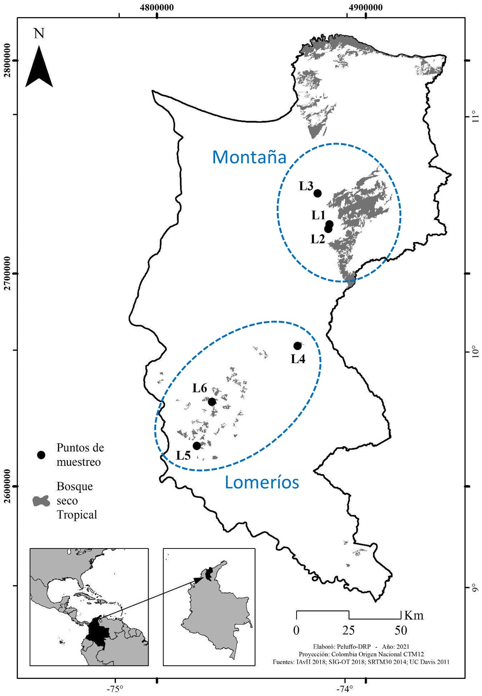
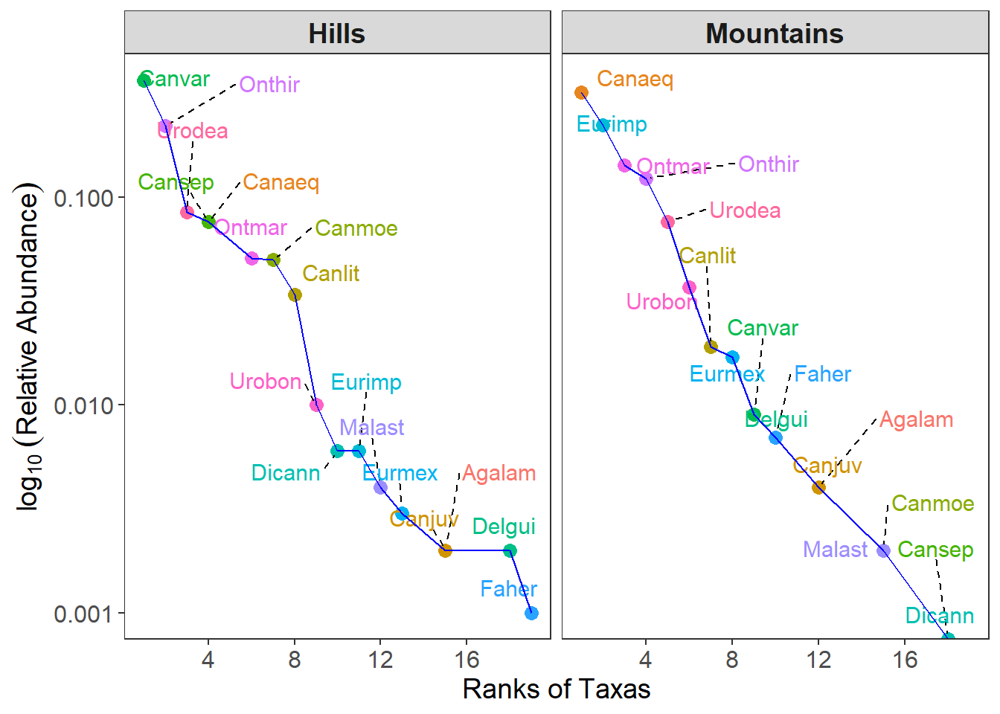
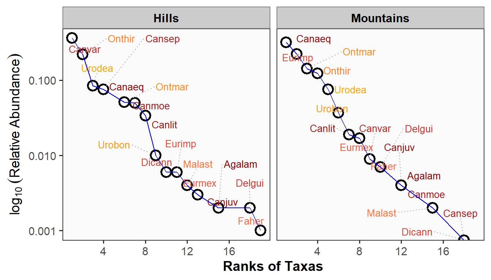

| N0 | N1 | N2 | H | Hb2 | N1b2 | J | E10 | E20 | |
|---|---|---|---|---|---|---|---|---|---|
| L1 | 14 | 5.71 | 3.74 | 1.74 | 2.51 | 5.71 | 0.66 | 0.41 | 0.27 |
| L2 | 9 | 6.61 | 5.59 | 1.89 | 2.72 | 6.61 | 0.86 | 0.73 | 0.62 |
| L3 | 10 | 4.79 | 3.92 | 1.57 | 2.26 | 4.79 | 0.68 | 0.48 | 0.39 |
| L4 | 14 | 6.83 | 5.14 | 1.92 | 2.77 | 6.83 | 0.73 | 0.49 | 0.37 |
| L5 | 13 | 2.49 | 1.65 | 0.91 | 1.31 | 2.49 | 0.35 | 0.19 | 0.13 |
| L6 | 18 | 4.60 | 2.83 | 1.53 | 2.20 | 4.60 | 0.53 | 0.26 | 0.16 |

Resumen
-
El presente análisis de diversidad alfa y beta se realiza con los datos obtenidos de abundancia para 22 especies de escarabajos coprófagos, colectados en seis (6) localidades del Departamento del Magdalena. En este sentido, el enfoque de este análisis consiste en evaluar los patrones de diversidad (alfa y beta). Para el caso alfa (diversidad local), se utiliza las propuestas de Withaker (1960) y de Chao et al. (2024), representados por la diversidad alfa clásica y la que se valora en cuatro pasos, respectiamente. La diversidad beta (entre localidades) se enfoca en la comparación de las propuestas de Podani (2011) y de Baselga (2010). A partir de esto se obtuvieron los siguientes resultados:
- La diversidad alfa no supera a las 18 especies (Localidad 6), con el menor valor de 9 especies (Localidad 2) (Table 1).
Las localidades 4 a 6 son las de mayor proporción de especies abundantes o dominantes, correspondientes al paisaje de lomeríos (Figure 2 y Figure 3).
Tanto el paisaje de montañas como el de lomeríos presentan una buena completitud (> 0.9) y solo dos especies sin detectar (paisaje de montañas) (?@tbl-tbl2 y ?@tbl-tbl3). La mayor riqueza se concentra en el paisaje de lomeríos (?@fig-fig4 y ?@fig-fig5).
- La diversidad gamma fue de 22 especies con un estimado o esperado de máximo 24 especies, según el estimador Jack1 (?@tbl-tbl6).
- La diversidad beta general, con datos de abundancia fue de 0.48, con una mayor contribución (LCBD) en las localidades del paisaje de lomeríos (L4, L5 y L6) (?@fig-fig6) y de las especies C. aequinoctialis, C. aequinoctialis, C. lituratus, C. septemmaculatus, C. variabilis, E. impressicollis, O. hirculus y U. deavilai (?@tbl-tbl7 b).
- La diversidad beta general, con datos binarios presentó el mayor aporte por el componente de reemplazo o de recambio de especies (Turnover) (?@tbl-tbl7 a).
- La diversidad beta para los paisajes de montaña (zona Norte) y de lomeríos (zona Sur), con datos binarios presentó valores de 0.35 y de 0.41 para los paisajes de montañas y de lomeríos, respectivamente (?@tbl-tbl7 a).
- La diversidad beta para pares de localidades, con datos binarios muestra en la clasificación (dendogramas) que la diversidad beta general es configurada especialmente por la diferencia de riqueza (incluye al anidamiento) generando dos grupos que separan a las localidades L2 y L3 del resto (?@fig-fig7). En la propuesta de Podani, a pesar de que domina el recambio, hay parejas de localidades en las que es mayor la diferencia de riqueza (?@fig-fig8 Y ?@fig-fig9). Lo anterior es diferente con la propuesta de Baselga, en donde el recambio siempre es mayor al anidamiento (?@fig-fig10 y ?@fig-fig11). Para las dos propuesta, la diversidad beta general, aumenta entre las parejas de localidades L1-L4, L2-L5 y L4-L5, demostrando la importancia de las localidades de lomeríos (L4 y L5) en esta diversidad.
Introducción
Whittaker (1960) fue el primero en definir los términos de diversidades alfa, beta y gamma. Definió a la diversidad alfa, como la diversidad local, a la diversidad gamma como la diversidad regional y la diversidad beta como la relación entre las anteriores, orientada a el cambio o la variación en la composición de las especies en los ensamblajes o las comunidades. Esta diversidad beta también puede brindar información sobre la variedad de lugares o de nichos que se pueden presentar en cada localidad (cuando hay diferencias en la diversidad alfa entre localidades). Las diversidad alfa y gamma son relativas al tamaño de la escala espacial o temporal que se utilice (alfa y gamma por ej. pueden ser desde un bosque hasta un departamento).
De acuerdo a Whittaker (1960), surgen dos enfoques orientados a las diferencias entre las comunidades evaluadas con la diversidad beta: (1) Un recambio, es decir, el cambio direccional en la composición de de especies a lo largo de un gradiente espacial, temporal o ambiental predefinido. (2) La variación en la composición de especies entre unidades de muestreo, sin referencia a un gradiente explícito (cambio especies o anidamiento).
Baselga y Gómez-Rodríguez (2019), coinciden con la propuesta de Whittaker, debido a que las diferencias entre las comunidades pueden generarse por (1) el recambio, reemplazamiento o sustitución de unas especies por otras (turnover o replacement) y por el (2) anidamiento o nestedness, asociado a la perdida de especies de una comunidad más diversa a otra menos diversa.
Harrison et al. (1992), Williams (1996), Lennon et al. (2001), Podani (2011) y Legendre (2014) coinciden con la propuesta de Whittaker, enfocando a las diferencias entre comunidades (diversidad beta) por dos procesos principales: (1) el recambio de especies (a veces llamado rotación) y (2) la diferencia de riqueza (ganancia y pérdida de especies, o su caso especial, anidamiento). En este orden de ideas, a continuación se describen aspectos asociados a los atributos de la diversidad beta o de diferencias entre comunidades.
El reemplazo o recambio de especies es lo que se observa a lo largo de gradientes ecológicos, en donde algunas especies se encuentran restringidas en un rango limitado del gradiente de acuerdo con su tolerancia y óptimos ecológicos. Algunas especies se observan en un extremo del gradiente, luego desaparecen y son reemplazadas por otras, y así sucesivamente. Las causas de estos patrones incluyen forzamientos ambientales, pero también, potencialmente, competencia y eventos históricos (es decir, perturbaciones y otros procesos que ocurrieron en el pasado y dejaron sus marcas en las comunidades). La configuración de los hábitats, como la presencia de bordes o ecotonos o las presiones antrópicas que modifican el paisaje, pueden repercutir en los procesos de reemplazamiento de especies (Filgeras et al. 2016).
La diferencia de riqueza se refiere al hecho de que puedan existir diferencias en el número de especies entre comunidades. Esto puede ser causado por desapariciones de especies locales, tambien por diferencias en las condiciones abióticas locales que conducen a diferentes números de nichos u otros procesos ecológicos que llevan a las comunidades a un mayor o menor número de especies. En caso de que la diferencia de la riqueza aumente, puede estar directamente relacionado con la riqueza de nichos disponibles, o con procesos de anidamiento cuando hay perdida de especies en algunos lugares.
El anidamiento es un caso especial de diferencia de riqueza donde las especies en sitios más pobres son un subconjunto estricto de las especies presentes en sitios más ricos.
Los índices de (1) reemplazo, de (2) diferencia de riqueza y de (3) anidamiento no son índices de diversidad beta; pero descomponen coeficientes de disimilitud que pueden usarse para estimar la diversidad beta.
Legendre (2014) propone un marco algebraico unificador para comparar las fórmulas publicadas de los tres componentes anteriores, definiendo a dos familias de índices, a las que denominó familias de Podani y de Baselga respectivamente, en honor a los nombres de los autores que abordaron estos índices. En la familia de Podani, el índice de diferencia de riqueza representa solo una parte del anidamiento, debido a que no incluye a especies comunes.
La familia de Baselga, define a un índice de reemplazo o recambio comparable a los de Podani. El anidamiento de Baselga es comparable al anidamiento relativizado de Podani y Schmera (2011). Según Legendre (2014), los índices de reemplazo y de diferencia de riqueza de la familia Podani son fáciles de interpretar en términos ecológicos, así como los índices de reemplazo en la familia Baselga. Los índices de anidamiento de Baselga son menos obvios, causando algunas controversias a la hora de analizarlos. Baselga (2010) denomina al indice de reemplazo como “recambio” o “rotación”, basado en la similitud de Sorensen o de sorensen y al restarlo con este índice de sorensen, se determina al componente de anidamiento.
Si a representa a las especies en común, b a las especies presentes en un sitio A y ausentes en un sitio B en comparación, c representa lo opuesto a b, Segun Borcard et al. (2018), Podani y Baselga coinciden en el hecho de que (1) el anidamiento sólo es posible cuando hay especies en común (a > 0), (2) el valor máximo se alcanza cuando b o c es cero. (3) El anidamiento aumenta cuando c aumenta. (4) Podani considera que las especies comunes a contribuyen directamente al anidamiento, al contrario al anidamiento de Baselga. En consecuencia, cuando b = c = 0 (no hay especies exclusivas de uno de los dos sitios comparados), Podani alcanza el valor de anidamiento máximo de 1 y Baselga de cero. (5) La contribución de a al anidamiento es clara en el índice de Podani, pero confusa y no monótona en Baselga. (6) El anidamiento de Podani tiene un límite superior fijo y alcanzable de 1; el valor máximo de Baselga cambia para cada par de sitios.
Objetivos
El objetivo de este análisis de diversidad beta para el ensamblaje de coprófagos, se orienta en los siguientes aspectos:
Determinar la diversidad beta general o total. Para conocer la diversidad beta de la escala general.
Con la propuesta de Whittaker (1960), que se realiza con datos de abundancias de las especies. Donde β = S/α¯, donde S es la diversidad gamma y α¯ es la diversidad alfa o promedio de especies entre las n localidades. Con la propuesta de Legendre (2014), se calcula la diversidad beta (BDtotal), la contribución de las localidades (LCBD) y de las especies (SCBD) a esta diversidad.
La propuesta de Baselga (2010) es con datos binarios y se utilizará para medir la diversidad beta general (βSOR), el nivel de recambio (βSIM) y el nivel de anidamiento (βSNE).
Identificar la diversidad beta espacial (paisajes de montañas y de lomeríos). Se realiza una zonificación de las localidades de acuerdo a su ubicación espacial, para comparar si hay diferencias en los elementos de la diversidad beta, entre las localidades ubicadas en los paisajes de montañas y de lomeríos del departamento.
- Con la propuesta de Podani (2011) se determinará el reemplazo (ReplLCBD) y la diferencia de riqueza (RichDiffLCBD). Permitiendo mapear el patrón espacial, probando la hipótesis de distribución aleatoria de las especies entre las localidades, mediante permutaciones.
Comparar la diversidad beta entre parejas de localidades. Orientado a evaluar el posible efecto de gradientes ambientales que ocasionen patrones de (1) reemplazamiento o de recambio entre localidades cercanas o las distantes, así como (2) cambios en los valores de riqueza debido a la posible diversidad de nichos disponibles en las localidades o por (3) procesos de anidamiento, bajo la premisa de que las localidades más estructuradas serán las que presenten mayor riqueza y patrones de anidamiento (Baselga et al. 2010).

1. Cargar las librerías
Se requiere cargar las librerías para el análisis de diversidad alfa, gamma y beta, por descomposición de las escalas alfa y gamma.
2. Cargar la base de datos
2.1 Datos de abundancia. Como el análisis de diversidad beta se realizará con datos de abundancia y de presencia-ausencia, inicialmente se requiere cargar la base de datos con valores de abundancia.
2.2 Datos de binarios. Se requiere transformar los datos a un formato binario o de presencia-ausencia, con el paquete caret.
Posteriormente se incorpora la clasificación de los bosques o localidades por dos paisajes de lomerío y de montaña, respectivamente, para evaluar cómo es el recambio y el anidamiento de estos sectores.
3. Diversidades Alfa y Gamma
De acuerdo a la propuesta de Whittaker (1960), el cálculo de la diversidad beta se deriva de las diversidades alfa y gamma, como β = S/α¯, donde S es la diversidad gamma y α¯ es la diversidad alfa o promedio de especies entre las n localidades.
3.1 Diversidades Alfa - Estimadores clásicos
La Table 1 muestra que el mayor número de especies (N0 o diversidad alfa de Whittaker) se presenta en las localidades L6, L4 y L1, respectivamente. La mayor diversidad asociada a taxones abundantes (N1), los muy abundantes o dominantes (N2) se presenta en L2 , L4, esto se refleja en la entropía de Shannon (H y Hb2) y en los valores de equidad de pielou, de Shannon y de Simpson (J, E10 y E20).
La Figure 1 muestra la relación inversa entre los valores de riqueza o del número de especies de coprófagos (N0), principalmente con los estimadores de equidad o de uniformidad, lo cual puede asociarse a que el aumento de taxones se correlacione con patrones de dominancia. Es así como las localidades más ricas en especies L6, L4 y L1, presentan las especies con mayor dominancia (?@tbl-tbl4). El resto de estimadores de diversidad (N1 y N2), de entropía (H y Hb2), así como de equidad (J, E10 y E20), presentan marcadas relaciones positivas o directas.
3.2 Diversidades alfa - Curvas RAD (Localidades)
Para propósitos de este documento se realizarán los diagramas con las quince (15) especies de coprófagos más abundantes en las localidades evaluadas. Este diagrama permite hacer una exploración de los patrones de abundancia de los principales taxones de las muestras en comparación, como complemento a los modelos paraétricos a realizar.
Se filtran los datos de abundancia por cada paisaje de montañas y de lomeríos. Posteriormente se inserta una columna de rangos de abundancia y otra columna de abundancia relativa. Finalmente se filtran a los 15 taxones más abundantes, para que las curvas no se saturen.
Se observa que las localidades 4 a 6 (localidades de lomeríos) son las de mayor proporción de especies abundantes o dominantes (Figure 2).
3.3 Diversidades alfa - Curvas RAD (Paisajes)
El paisaje con mayor proporción de taxones dominantes es el de Lomeríos (Figure 3).

